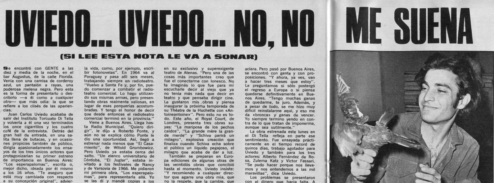
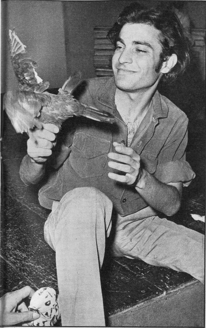
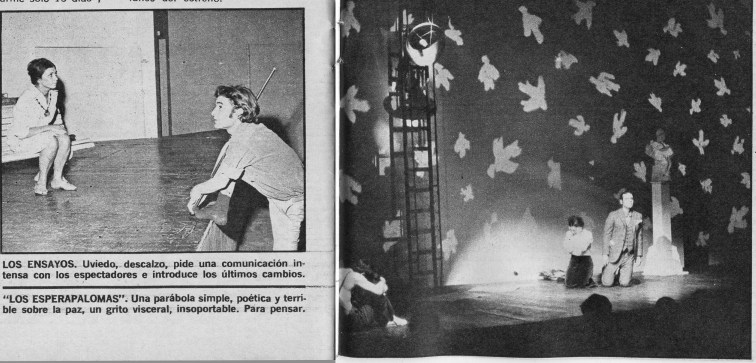

Nota en revista Gente, 1968
En el número de la revista Gente del 7 de marzo de 1968 salió una
nota-entrevista sobre Juan Uviedo, su obra "El esperapalomas"
que se estaba mostrando en el Instituto Di Tella, y sus comienzos en el teatro,
incluyendo sus primeras experiencias en Europa.

Transcripción completa:
Se encontró con GENTE a las diez y medía de la noche, en el bar Augustus,
de la calle Florida. Venía con una camisa de corderoy azul, un pantalón a
rayas, una poderosa melena negra. Pero esta es la forma de presentarlo o
describirlo —a él como a cualquier otro— que más odia: la que se refiere a
los clisés de las apariencias.
Juan Carlos Uviedo acababa de salir del Instituto Torcuato Di Tella y volvería
a él una vez terminados los once cigarrillos y los cuatro café de la
entrevista. Detrás del gran hall de entrada, en una salita llena de butacas, y
en ocasiones propicias también de público, dirigía apasionadamente los
ensayos de los tres únicos actores que protagonizarían su primer estreno de
importancia en Buenos Aires: "Los esperapalomas", escrita o, mejor
dicho, ideada por él mismo a los 16 años. "Te aseguro que está muy
cambiada con respecto a su concepción original", advierte Uviedo. Y, en
seguida, la teorización: "Lo peor que puede hacer un director de teatro es
respetar a lo que se llama autor. Yo director empiezo por no respetarme como
autor. Es por eso que está cambiada".
Por el contrario de lo que puede imaginarse, el estreno de "Los
esperapalomas" no significa para Uviedo un lanzamiento artístico, una
prueba para la calidad de su capacidad creadora. Significa un momento decisivo,
una incursión temeraria en el público argentino —el que le es más cercano,
más propio— luego de haber conquistado algunos de los más difíciles públicos
europeos. Santafesino desde hace 24 años, pésimo alumno de la escuelita de la
localidad residencial de San Carlos Centro ("Aún se me escapan horrores
ortográficos"), único hermano de cuatro hermanas, explorador de las
posibilidades radioteatrales a los 14 años, frustrado aspirante a médico en la
Universidad de Córdoba, adolescente de poemas y fantasías. Juan Carlos regresa
lentamente a la que asomó como primera vocación: el teatro. Mientras tanto:
"Hago cosas horrendas para ganarme la vida, como, por ejemplo, escribir
fotonovelas". En 1964 va al Paraguay y pasa allí seis meses, trabajando
siempre en radioteatro. "Vuelvo a Santa Fe y, por fin, puedo comenzar a
combatir el radioteatro comercial. Lo hago utilizando sus mismas armas, pero
presentando obras realmente valiosas, en lugar de esas porquerías
acostumbradas. Y tengo el honor de decir que desde entonces el radioteatro
comercial terminó en la provincia."
Viene a Buenos Aires. Llega hasta Radio Municipal. "Quiero dirigir",
le dijo a Roberto Ponte, y aún no se explica cómo Ponte le dio una
oportunidad. Así, llegó a estrenar nada menos que "El Casamiento",
de Witold Grombowicz. Pero Uviedo ya estaba cerca del salto. "Un elenco
universitario de Córdoba, "El Juglar", estaba invitado a los
festivales de Nancy y de Varsovia de 1966. Me pidieron mi primera obra,
"Los esperapalomas", para representarla allá. Yo se las di y mandé
copias a los festivales. Eso me salvó: finalmente se suspendió el viaje del
elenco, pero desde Varsovia se interesaron por mi obrita y me pidieron los
derechos. Al poco tiempo me invitaban a asistir al estreno en el Teatro
"Lenin", de la Casa del Trabajo; luego al estreno de otra obrita mía,
"Un juego en círculo para espera del guerrero", en la ciudad de Turín."
"Los esperapalomas" estuvo 10 meses en la cartelera polaca. No era un
mal comienzo. Ya en Europa, con muchas más ideas que dinero, Uviedo no pierde
oportunidades. Instala su base de operaciones en España y, desde allí, inicia
sus contactos, a veces casuales, con el ambiente teatral europeo. Conoce a
Tchirilov, discípulo del maestro ruso Stanislavsky, que le pide "De cómo
mamá quedó sorda y comenzó la alegría" para estrenar en Belgrado. En
París conoce a Grombowicz, que le da los derechos para que monte "El
casamiento". "Pienso hacerlo en Madrid, y quizá con Alfredo Alcón",
confiesa Uviedo. Mientras tanto, la actriz Irene Pappas le pide otra obra
suya, "Señor Wilson, si no acierta revienta", para estrenar en su
exclusivo y superexigente teatro de Atenas. "Pero una de las cosas más
importantes creo que fue el conectarme con Ionesco. No te imaginás lo que fue
para mí escucharle decir al viejo que ya no tenía más nada que decir en
teatro y que pensaba dirigir cine. Le gustaron mis obras y piensa inaugurar la
próxima temporada de su Théatre de la Huchette con «Antoineantoine»".
Pero esto no es todo. Este año, el Royal Court, de Londres, presenta tres obras
suyas: "La mariposa de los pechos caídos", "La grande mere la
grande merde" y "Schiva parirá un milagro", explosiva creación
que finaliza cuando Schiva echa sobre el público un líquido pegajoso, el
milagro que acaba de dar a luz.
También se preparan en Europa ediciones de algunas otras de las veintidós
obras que concibió hasta el momento. Uviedo insiste: "Y recomiendo a
cualquier director que agarre una obra mía, que no la respete, que la cambie,
que la recree, que para eso fue pensada. Que haga como yo cuando dirijo una obra
de otro. Tenemos que terminar con el mito del autor teatral. El teatro no se
escribe y luego se representa. El teatro se hace recreando constantemente. Si lo
escribimos es para transmitir la idea original y nada más."
Con todo, este joven promotor de la ceremonia teatral con participación del público
—como suele caracterizársela— no se queda en las tablas solamente. También
actuó en el film "Sólo un triste muchacho", junto a Catherine Spaak
y Nino Manfredi, y con Jean Seeberg y Pierre Brasseur en "Los pájaros van
a morir al Perú", otro film que tampoco se ha estrenado en Buenos Aires y
por el que ganó 3 millones y medio de pesos. En París tiene un contrato
pendiente para filmar películas que aún no sabe sí podrá cumplir. La primera
de ellas, bajo la dirección de Louis Malle, en la que sería protagonista junto
con Annie Girardot y Jean Seeberg.
Lo increíble es que Juan Carlos Uviedo vino a la Argentina para pasar las
fiestas con su familia. "Pensaba quedarme sólo 15 días". Aclara.
Pero pasó por Buenos Aires, se encontró con gente y con proposiciones. "Y
ahora, ya ves, van a hacer tres meses que estoy". Le preguntamos si sólo
postergó el regreso a Europa o si piensa quedarse definitivamente en Buenos
Aires. "Tengo muchas ganas de quedarme, te juro. Además, y a pesar de
todo, se me hizo muy difícil reinstalarme aquí, y eso me da «bronca» y ganas
de vencer. Yo siempre termino yendo en contra de lo que tratan de imponerme,
aunque sea sutilmente."
La obra estrenada este lunes en el Di Tella refleja en parte ese sentimiento.
Fue ensayada prácticamente en el tiempo record de quince días, trabajo
agotador para Uviedo y también para los tres actores: Alberto Fernández de
Rosa, Zulema Katz y Víctor Fassari. "Se pudo hacer porque nos llevamos y
nos entendemos a las mil maravillas", dice Uviedo.
Los problemas se presentaron con el dinero que hacia falta. A pesar de ser
solamente 100.000 pesos los imprescindibles para montar el espectáculo Uviedo
tuvo que dormir más de una vez al aire libre para poder derivar lo que gastaba
en el hotel hacía la financiación de la obra. Pero esas cosas no le preocupan.
"Las plazas me encantan —comenta irónicamente—. Fijate que «Los
esperapalomas» la pensé sentado en Plaza Congreso y comiendo medialunas (eso sí,
las medialunas me enloquecen) y mirando los jubilados, mientras le daba migas a
las palomas".
Uviedo no espera que a todos les guste su obra. "No es para la élite, pero
es para gente franca. Hay otra gente, caballos con orejas abiertas que escuchan
los gritos y se lo tragan y dan coces, pero el grito es nuestro. A esa gente
puede que no le guste." Le preguntamos si teme la censura. "En este país
no hay censura, pero hay algo tan peligroso y temible como la mordaza: montones
de manos y dedos muy cerca de todas nuestras bocas."
Era muy tarde ya, hora de seguir ensayando y de esperar el lunes del estreno.
Fotos incluidas en la nota:

